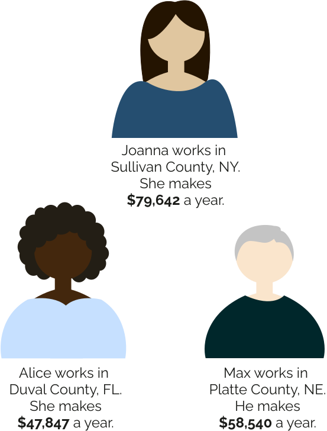

Let's answer this question on the state, county, and individual level.
Well, it depends on where you live.
Even within counties, pay differs widely by school district.
We can see this in action by taking a closer look at districts in three states.
Now let’s take a look at what these numbers mean on an individual scale.
Here are three teachers who make the average teacher salary for their county. Let’s learn more about their counties to see how these differences in pay play out.
Each individual also roughly represents the median teacher salary for its state.

Sullivan County, at a Glance
Joanna, who works in Sullivan County, makes $20-30,000 more a year than Max or Alice. This reflects how New York pays its teachers the most of any other state on average. However, this varies across districts, in part because New York has more districts than either Nebraska or Florida.
Duval County, at a Glance
Alice works in Duval County, the most populous of the three. She earns around $8,000 less than Max, and $30,000 less than Joanna. Florida is in the bottom 5 states in terms of average teacher salary.
Platte County, at a Glance
Max lives in Platte County, the least dense county of the three in terms of population. He makes around $20,000 less than Joanna but $8,000 more than Alice, which shows how Nebraska on average pays teachers close to the median salary across all states.